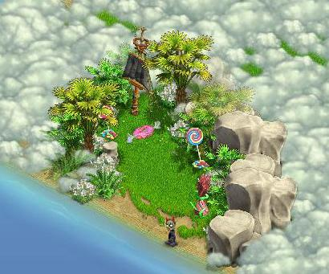

Получено: файл; исходный URL. Оригинальные байты архивной фотографии острова, без перекодирования; немецкая локализация. Автор изображения не установлен. Страница: источник.


Süße Insel — немецкая версия
World of Zombies, немецкая локализация; снимок 2015- Тип
- Острова зарубежной браузерной версии
- Версия и дата
- World of Zombies, немецкая локализация; снимок 2015
Данные по источнику · немецкая браузерная локализация; сеть не уточнена · снимок 13.02.2015
Предварительно: Фанатский источник; дата снимка не равна дате обновления, применимость к другим версиям не подтверждена.. Требуется сверка.
- Название
- Süße Insel (буквально «Сладкий остров»); точное соответствие названия в русской версии не установлено.
- Контекст
- Страница продолжения Das Geheimnis von Oops показывает постройку парусника, после чего идут изображения острова и три задания, открываемые одновременно. Условия находятся на изображениях и пока не расшифрованы.
- Иллюстрации
- Проверено архивное изображение острова №1. Попытки скачать снимки №2 и №3 вернули 404; это не исключает архивные копии на других датах.
Связанные сущности
нет проверенных связей — требуется сверка.